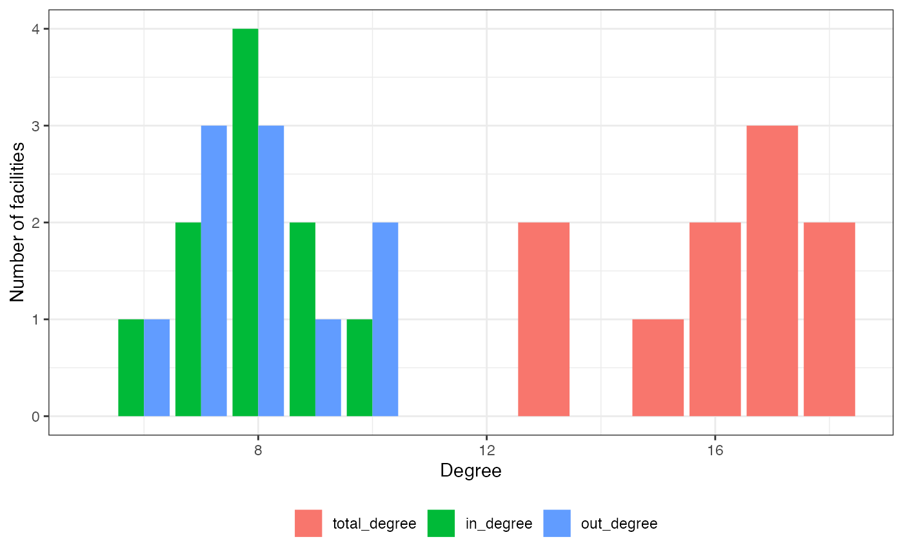
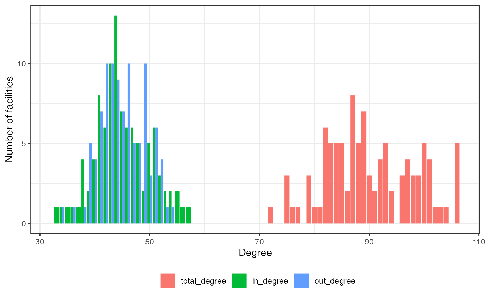
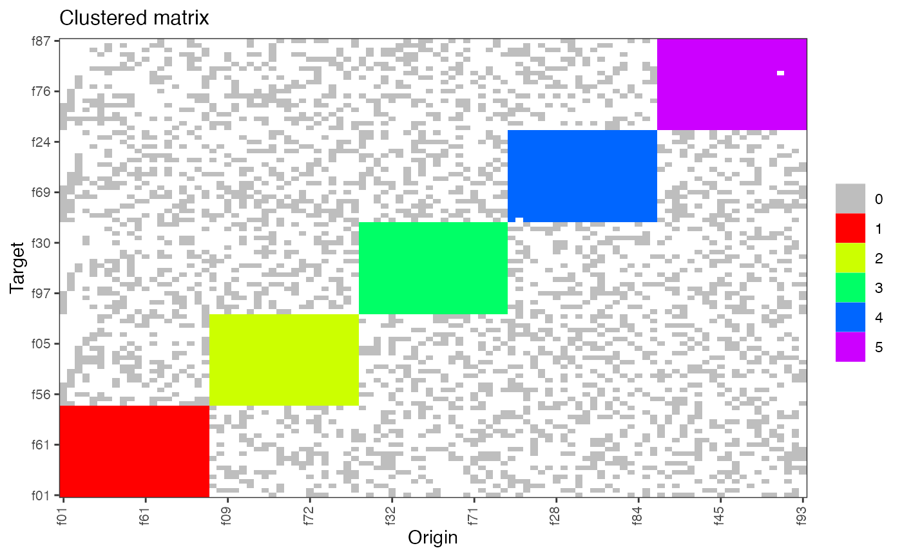

vignettes/HospitalNetwork-Workflow.Rmd
HospitalNetwork-Workflow.RmdThis R package contains functions to help interested researchers construct networks from data on movement of individual between locations. Although this package was initially developed in the context of networks of healthcare facilities, where the links represent transfer of subjects between facilities, the process can be generalized to the movement of any type of subject between any type of locations.
Formally, a network is composed of nodes which may or may not be connected by edges (or links). In the context of this package, the nodes are the facilities, and the links represent connections between facilities. Although the definition of a node is straightforward, one can define a connection between two facilities in different ways. This package allows to construct a network using various definition of a connection, which are discussed in detail here [ref].
In terms of data structure, a common way of representing a network is with a simple \(n*n\) matrix (often called adjacency matrix, or contact matrix). The rows and columns contain the nodes (which appear once in each), and each cell contains the information on whether or not the two nodes are connected.
| A | B | C | D | E | |
|---|---|---|---|---|---|
| A | 0 | 687 | 373 | 296 | 0 |
| B | 0 | 0 | 1294 | 263 | 598 |
| C | 602 | 0 | 0 | 0 | 0 |
| D | 0 | 0 | 718 | 0 | 0 |
| E | 339 | 0 | 86 | 35 | 0 |
At its core, the purpose of this package is to compute the contact matrix from raw data on movement between facilities. Additionally, this package provides the researcher with various tools to analyze and visualize the constructed network.
The package requires a minimal set of information in order to build a network of facilities. This set of data is describe under the section “Required data”. To proceed to further analysis, the package can use additional information in case they are available. These informations are listed under the section “Optional informations”.
The minimal data needed to construct the network is a simple table with four variables:
Therefore, each row must correspond to a unique stay of a subject in a facility. Stays are not allowed to overlap (see Data management).
library(HospitalNetwork)
#> Loading required package: data.table
data = create_fake_subjectDB(n_subjects = 3, n_facilities = 3)
data
#> sID fID Adate Ddate
#> 1: s1 f2 2019-01-20 2019-01-24
#> 2: s1 f3 2019-02-27 2019-03-04
#> 3: s1 f2 2019-03-27 2019-03-28
#> 4: s2 f2 2019-02-11 2019-02-12
#> 5: s2 f3 2019-03-12 2019-03-15
#> 6: s2 f3 2019-04-18 2019-04-19
#> 7: s3 f3 2019-02-08 2019-02-14TODO
| Item | Variable name | Description |
|---|---|---|
| Mode of entry | entry | a variable indicating whether the subject arrived from home (0), or from a facility (1) |
| Mode of discharge | discharge | a variable indicating whether the subject is discharged back home (0), or to a facility (1) |
| Subject residential postcode | postcode | a variable indicating the postal code of the subject residency |
| Wards visited by the subject | ward | a single type of ward predominantly visited by the subject, coded as 1 for ICU or acute care and 0 for others |
The main function of the package is
hospinet_from_subject_database(), which takes the database
as argument. It will first performs various diagnostic tests by calling
the function checkBase(), to check for possible issues, and
to ensure that the data is formatted correctly.
If the tests are successful,
hospinet_from_subject_database() will proceed with several
operations and function calls to construct the network. The return value
is an HospiNet R6 object that contains the network itself,
as well as different metrics and information on the network.
The diagnostic tests on the database are performed by the function
checkBase().
The function will check for possible errors in the database. It also
offer the possibility to automatically correct the issues it may have
found in the database. However, since we cannot guarantee having checked
for every possible issue, we encourage you to ensure the data is in the
correct format, and is free of errors, prior to run the function. By
default, checkBase() will not modify the database, but
return informative messages on the issues found. If you wish the
function to try to autocorrect the database, you must set the
corresponding arguments (see Data
management). We recommend that you carefully check the result
afterwards.
# Example
library(HospitalNetwork)
base = create_fake_subjectDB(n_subjects = 100, n_facilities = 10, with_errors = TRUE)
checkBase(base)
#> Error in checkBase(base): Column(s) sID, fID, Adate, Ddate provided as argument were not found in the database.The requirements to pass the diagnostic tests are the following:
the database must be of class data.frame or
data.table. The functions are implemented in the
data.table framework, so if a data.frame is
provided, it will be converted to a data.table.
the database must have at least four columns. By default the
column names must be: c("sID", "fID", "Adate", "Ddate".
Although we recommend using these column names, it is possible to use
different names by providing them as arguments.
columns "sID" and "fID" must be of type
character.
dates are handled using functions from the lubridate
package. They should be POSIXct date-time objects.
Alternatively, they can be provided as character strings. In that case,
you can use checkBase() to try to parse them to date-time
objects using lubridate functions (see Data management).
stays should not overlap (see Data management for more details).
The diagnostic functions of checkBase() will check for
the following issues:
missing values: the following values will be flagged as missing:
actual missing values of the form NA or NaN,
character strings
"NA", "na", "Na", "N/A", "n/a", "N/a", "NaN"), and empty
character strings or empty quotes "", "''".
discharge date of a stay anterior to its admission date.
overlapping stays: TODO
You can use the function checkBase() to try to correct
automatically the issues it has found by setting the corresponding
arguments.
missing values: to remove entries with missing values, set the
argument deleteMissing. If set to "record",
the record with the missing value will be removed. If set to
"subject", all records of the same subject will be
removed.
errors: to remove errors, such as discharge date of a stay
anterior to admission date, set the argument deleteErrors.
If set to "record", the record with the error will be
removed. If set to "subject", all records of the same
subject will be removed.
overlapping stays: checkBase() will automatically
handle overlapping stays as follows: TODO
dates: if admission and discharge dates are provided as character
strings, you can use checkBase() to try to parse them to a
date-time object, which uses internally the lubridate
functions. To do that, set the argument
convertDates = TRUE. You must also specify in what format
are the dates (“year-month-day”, “day-month-year”, etc.) by setting the
argument
dateFormat = c("ymd", "ydm", "dmy", "dym", "mdy", "myd").
HospiNet is an R6 object containing the facility matrix as well as specific information regarding the network. We have developed a summary and a print method for this object. The information contained in an HospiNet objects are:
mydbmed = create_fake_subjectDB(n_subjects = 100, n_facilities = 10)
hn = hospinet_from_subject_database(base = mydbmed, noloops = FALSE)
#> Input database was not checked yet, which is required for network reconstruction.
#> Running 'checkBase()' with default parameters.
#> If this doesn't work, please run checkBase() separatelty with custom parameters first.
hn
#> 10 facilities and 142 movements.
#> Movement window is 365 days.
#> Constructing full matrix
#> f01 f02 f03 f04 f05 f06 f07 f08 f09 f10
#> f01 1 2 2 2 1 2 1 1 4 1
#> f02 1 4 1 3 1 0 0 1 4 1
#> f03 2 1 4 0 3 1 1 2 3 1
#> f04 0 1 2 3 1 0 2 0 1 1
#> f05 2 1 2 1 4 0 1 3 0 1
#> f06 0 3 2 2 1 1 1 0 1 0
#> f07 0 2 0 1 1 2 1 3 1 1
#> f08 4 2 0 2 0 1 0 1 0 3
#> f09 2 3 1 2 3 0 3 0 2 0
#> f10 1 1 1 2 1 2 1 1 1 2
plot(hn)
plot(hn, type = "degree")
plot(hn , type = "clustered_matrix")
mydb = create_fake_subjectDB_clustered(n_subjects = 10000, n_facilities = 100, n_clusters = 5)
hn = hospinet_from_subject_database(base = mydb, noloops = FALSE)
#> Input database was not checked yet, which is required for network reconstruction.
#> Running 'checkBase()' with default parameters.
#> If this doesn't work, please run checkBase() separatelty with custom parameters first.
hn
#> 100 facilities and 18169 movements.
#> Movement window is 365 days.
#> Matrix too big to be printed on screen.
plot(hn)
plot(hn, type = "degree")
plot(hn , type = "clustered_matrix")
plot(hn , type = "circular_network")
#> Constructing full matrix
#> Warning: Removed 100 rows containing missing values
#> (`geom_edge_path()`).